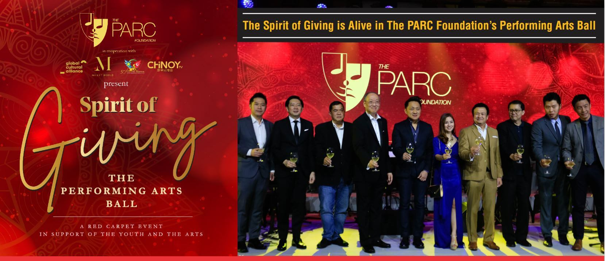
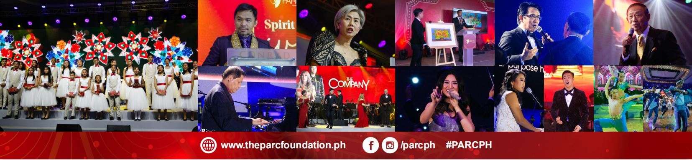

The Performing Arts and Recreation Center (PARC) Foundation held their most celebrated fundraising event yet last December 11 entitled “Spirit of Giving:The Performing Arts Ball” at the Conrad Hotel Grand Ballroom, Mall of Asia Complex, Pasay City. The event aimed to raise funds for the foundation’s PARCaralan Program which provides educational assistance and free performing arts training to underprivileged youth in the Philippines, particularly in San Juan and Tondo, Manila.
This exclusive red carpet charity ball is the first of its kind in the Philippines, highlighting the potential of performing arts to transform the lives of the Filipino youth. The event was done in cooperation with the Singapore Embassy in Manila,Global Cultural Alliance, Millet World, Chinoy TV, and Manila Bulletin. The evening also serves as a culminating event for the 50th anniversary of the bilateral ties between Singapore and the Philippines.
“May the spirit of Christmas be always in our hearts…”
The Christmas spirit of generosity was unmistakable in theair of the ballroom. The pre-event program featured a charity auction. Items generously donated to The PARC Foundation for the event were open for bidding, featuring artworks by Juvenal Sanso, Ranjit Das, Master Sun Yu-li, the winners of the National Digital Arts Awards, and a Steinway B-211 grand piano from Steinway Boutique Manila.
The main program began with acknowledging the presenceof the evening’s guests of honor: Senator Emmanuel “Manny” Pacquiao and Vice Mayor of the City of Manila Ma. Sheilah "Honey" Lacuna-Pangan, who have both wholeheartedly expressed their support for the youth and the arts.
Moreover, Mr. Edgar Saavedra, Chairman of Megawide Foundation, received a plaque of appreciation from The PARC foundation for their pledge of long-term partnership.From this point, a pioneering life skills exchange program is underway to train scholars from the families of Megawide Foundation employees and, at the same time, provide career opportunities to the families of PARCaralan scholars.
“Dreams inspire worlds for change… lead us to better places…”
For this one special night, performing artists from different generations, belonging to different nations and spanning different genres gathered to give PARC’s supporters a glimpse of what the PARCaralan Scholars can be in the near future.
The PARCaralan Music Scholars with their stringinstruments, together with the young hip-hop troupe Stylo Mylo Crew from Singapore’s Little Arts Academy, and the budding singer Christine Gabrielle Francisco gave a rousing collaboration of Whitney Houston’s “Greatest Love of All.”
Dazzling performances kept the crowd on the edge of their seats as homegrown talents from both the Philippines and Singapore entertained the audience. Gracing the stage were “Asia’s Phoenix” Morissette Amon, foremost vocal harmony group The CompanY, and the country’s beloved Father of Christmas Carols, Mr. Jose Mari Chan.
The Manila Philharmonic Orchestra under the baton of Maestro Rodel Colmenar, an excerpt of “The Nutcracker” by Philippine Ballet Theatre, and renowned pianist and member of PARC's Board of Trustees Dr. Raul Sunico gave a spotlight on more Christmas classics, the rich sounds of the Steinway & Sons grand piano echoing throughout the ballroom.
To represent Singapore, Corey Koh exhibited hisexceptional skills as a 17-year old classical tenor, while international jazz singer Michelle SgP serenaded the crowd with her original song “Dreams,” a highly significant song that carried the theme of the night.
“A million dreams are keeping me awake…”
You may recall the hit 2017 biographical movie-musical featuring the visionary achievements of a poor tailor’s son,who achieved his dreams through grit, wit, and belief in those who society has given up on.
Almost 200 years later, the heart of “The Greatest Showman’s” P.T. Barnum has lived on in one particular advocate for the arts, his dream and vision transcending from himself into the hearts of countless others.
More than a fundraising event, the night was also a tributeto The PARC Foundation’s young and visionary founder,Wilmer Ong Guido. Very much like P.T. Barnum, Wilmer believed in where his dreams could take him. Wilmer envisioned providing a safe space for artists to grow and hone their crafts in a cultural center in San Juan.Unfortunately, his untimely passing in late 2017 put those dreams on hold as he left a gaping hole in the foundation’s heart.
January 2019 came as a breath of fresh air as co-founder Ms. Issay Nodalo stepped up to become PARC’s Executive Director with the newfound support of Mr.William Guido,Chairman and CEO of the Guido Group of Companies and Wilmer’s father.
The past year saw PARC grow exponentially through partnerships, networks, donors, and patrons. Support came in the form of partnerships with Singaporean group The RICE Company Limited and its subsidiariesGlobal Cultural Alliance and Millet World, leading to the Singapore Embassy in the Philippines showing their support for the future of the foundation.
It seems that Wilmer’s dream is slowly coming together as it should be. By 2025,The PARC Foundation aims to reach the goal of 300 scholars helped, supported, and provided for. With this season’s Spirit of Giving, we can see that not one, but a million dreams have indeed taken flight for the night.
For more information, you may visit www.theparcfoundation.ph or facebook.com/PARCph or contact (02) 8350 6356.


.webp)